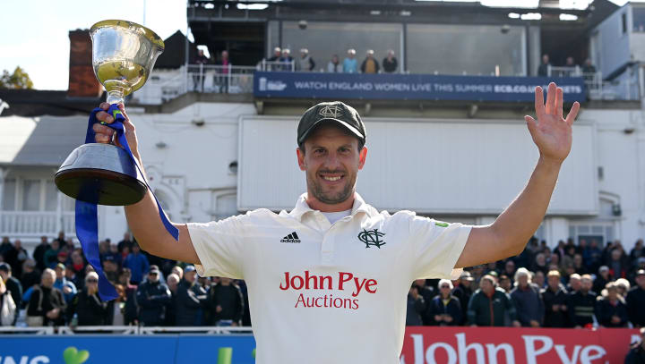

A fan-run quiz club for the Steven Mullaney faithful. Every answer comes straight off a real scorecard, so if you get one wrong, it's plumb.

Season by season, every match on file. Runs are all formats combined; wickets are those where he was the bowler (run outs excluded); the last column counts catches and run-outs.